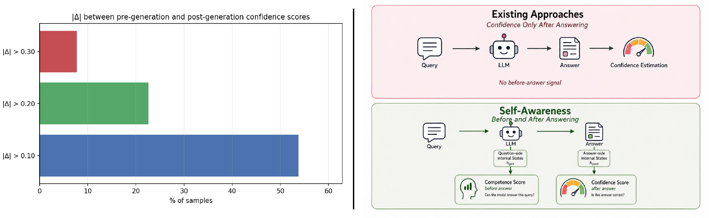

Competence Before Generation, Confidence After:A Two-Stage Self-awareness Framework for Large Language Models
Institute of AI for Engineering, Tongji University
† Corresponding authors
Before answering, estimate what a model can get right.
After answering, assess the answer it actually produced.

AUROC and ECE are shown on a 0–100 scale here. Changes are rounded from the paper’s reported gains; they measure reliability estimation, not answer accuracy.
Abstract
While demonstrating remarkable capabilities, Large Language Models (LLMs) often generate fluent yet unreliable answers, making reliability estimation a critical prerequisite for safe deployment. Existing confidence estimators draw on surface-level outputs (e.g., token probabilities and multi-sample consistency) and internal-state probes. We study how internal reliability signals support prospective judgments before generation and retrospective judgments about a generated answer. This perspective echoes human meta-cognition, where monitoring at different stages supports self-awareness. Motivated by this insight, we propose a two-stage self-awareness framework that monitors model reliability from the internal states of a frozen language model. Before generation, the framework estimates the model's competence to answer correctly, defined through sampled-answer correctness. After generation, it assesses the correctness of the particular answer produced. Lightweight heads learn these stage-specific targets with sample-derived soft correctness and consistency supervision, and reuse a single autoregressive generation process at inference. Experiments on seven benchmarks demonstrate improvements in average ranking and calibration over the knowledge-boundary baseline under both in-domain and out-of-domain settings. Across nine in-domain settings, SA improves macro AUROC by 7.51 points; strict out-of-domain evaluation yields 0.7002 ± 0.0064 over twelve settings. Further analyses reveal complementary predictive information in the two stages: pre-generation competence remains informative about correctness after conditioning on post-generation confidence in pooled diagnostics. These findings highlight the value of stage-specific internal monitoring for LLM reliability estimation. Code will be made publicly available to facilitate future research.
Two stages. Complementary signals.
Lightweight, independently trained heads read the internal states of a frozen language model. Sample-derived correctness and consistency provide auxiliary supervision during training.
Prospective competence
Estimate the model's ability to answer a question correctly, using prompt-side internal states and sampled-answer correctness as the target.
Retrospective confidence
Estimate correctness of the generated answer from answer-side internal states. Post is the main self-awareness readout.

A single generation process includes multiple autoregressive forward steps. The monitor reuses these computations without additional answer sampling or a full-sequence replay.
Reliability across tasks and models
Seven main benchmarks cover question answering and mathematical reasoning. Evaluate ranking (AUROC), calibration (Brier and ECE), and selective prediction (AURC and E-AURC).
Nine settings: Llama2 / Llama3 / Qwen3 × Natural Questions / StrategyQA / MATH. Paper Table 1.
| Method | AUROC ↑ | Brier ↓ | ECE ↓ | AURC ↓ | E-AURC ↓ |
|---|---|---|---|---|---|
| KB | 0.689 | 0.219 | 0.203 | 0.404 | 0.173 |
| CLCM | 0.675 | 0.207 | 0.156 | 0.411 | 0.180 |
| SA (ours) | 0.764 ± 0.002 | 0.176 ± 0.006 | 0.108 ± 0.014 | 0.363 ± 0.002 | 0.132 ± 0.002 |
SA improves macro AUROC by 7.5 points and reduces Brier / ECE by 4.3 / 9.5 points versus KB.
SA reports mean ± sample SD across three probe seeds with fixed generated answers and splits. KB and CLCM are point estimates. Values are rounded to three decimals for readability; the PDF retains full precision. Aggregate gains do not imply a win on every individual setting.
Complementarity before and after
Pre-generation competence remains informative about correctness after conditioning on post-generation confidence in pooled diagnostics.
Calibration through score fusion
On nine ID settings, fusion reduces Brier by about 8% (0.176 → 0.161) and ECE by about 56% (0.108 → 0.048), compared with independent Post. Independent Post remains the main readout.
Evaluation scope
The main ID study uses Llama2-7B, Llama3-8B and Qwen3-4B. Strict OOD uses Llama3, Qwen3 and Gemma3 across TriviaQA, GSM8K, BoolQ and CommonsenseQA (12 settings). Qwen3-32B is an additional extension, outside the main nine-setting ID macro-average. All numbers shown here are from the paper.
Citation & resources
The preprint PDF is available above. Code will be made publicly available. An arXiv link will be added after an identifier is assigned.
@misc{wang2026competence,
title = {Competence Before Generation, Confidence After: A Two-Stage Self-awareness Framework for Large Language Models},
author = {Wang, Tianyi and Zhang, Ridong and Liang, Shuxian and Huang, Zhen and Wan, Chaoqun and Yan, Jianhao and Hua, Xian-Sheng},
year = {2026},
howpublished = {Preprint}
}